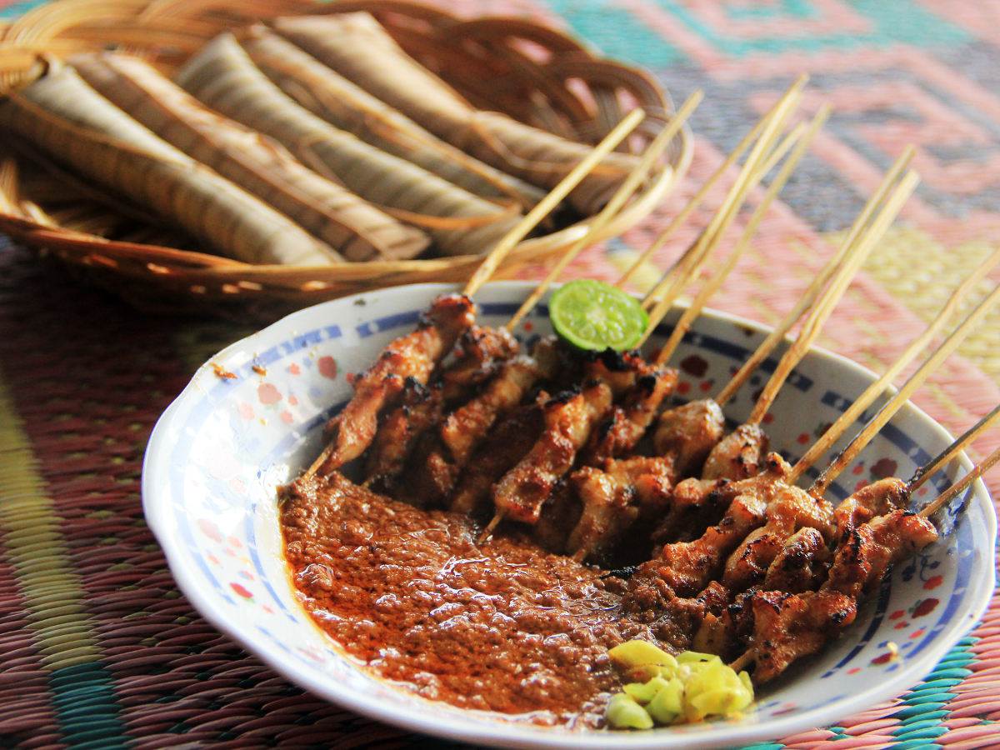

Sejarah

Pulau Lombok diperintah oleh raja-raja sebelum kemudian ibukota Kerajaan dipidahkan ke Cakranegara. Setelah Kerajaan Mataram jatuh oleh pemerintah Hindia Belanda, Cakranegara mulai menerapkan sistem pemerintahan dwitunggal berada di bawah Afdeling Bali Lombok yang berpusat di Singaraja, Bali. Pulau Lombok dalam pemerintahan dwitunggal terbagi menjadi 3 (tiga) onder afdeling, dari pihak kolonial sebagai wakil disebut kontrolir dan dari wilayah disebut Kepala Pemerintahan Setempat (KPS) sampai ke tingkat Kedistrikan. Adapun ketiga wilayah administratif masih disebut West Lombok (Lombok Barat), Middle Lombok (Lombok Tengah) dan East Lombok (Lombok Timur).
Geografis
Kota Mataram memiliki topografi wilayah berada pada ketinggian kurang dari 50 meter di atas permukaan laut (dpl) dengan rentang ketinggian sejauh 9 km, terletak pada 08° 33' - 08° 38' Lintang Selatan dan 116° 04' - 116° 10' Bujur Timur.
Wisata
Kota Mataram terletak di pulau Lombok, merupakan sentra dari perjalanan wisata di Pulau Lombok. Kota Mataram saat ini dikembangkan menjadi salah satu kota pariwisata.
Wisata Alam

Pulau Lombok dengan pusat di Kota Mataram, merupakan tempat yang sangat terkenal dengan eksotisme alamnya. Dari kota ini anda bisa menuju tempat wisata alam yang sangat terkenal di antaranya Pantai Senggigi, Gili Trawangan, Pantai Kuta, Pantai Ampenan, Pesona Gunung berapi tertinggi kedua di Indonesia yaitu Rinjani.
Wisata Budaya
Untuk wisata budaya, perpaduan antara budaya Lombok dan Bali dan sentuhan dari etnis lainnya, melahirkan suatu kolaborasi budaya yang sangat menarik, dan ada beberapa tempat menarik yang layak untuk dikunjungi terkait dengan hal tersebut antara lain, Kuburan Tionghoa Bintaro, Taman Mayura, Pura Meru, Pura Segara, Museum Negeri Nusa Tenggara Barat, Loang Baloq, Kota Tua Ampenan, Taman Budaya Provinsi Nusa Tenggara Barat
Wisata Kuliner

Kota ini menyajikan sajian khas Lombok di antaranya adalah ayam taliwang, beberuk terong, sate bulayak, plecing kangkung, nasi balap puyung, ares, sate rembiga, sate tanjung, poteng jaje tujak, iwel, dan bebalung.